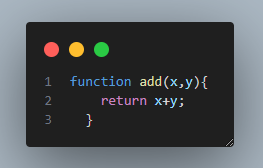
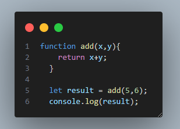
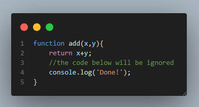

Returning from functions
The methods we have seen so far output their result. In some cases, we do not need to output the result but need to assign it to a variable, to work with it in our program. In these cases, we need our method to return the result value:
Now we can use our function and assign the result to a variable:
Returning is useful when you don't need to output the result of the function, but need to use it in your code.
The return statement ends the function execution, which means that everything after it inside the function will be ignored - the program just goes on from the scope of the function.
Lesson Takeaways
You did it! This was the last lesson of this course. Amazing job! Here is our summary:
the return statement ends function execution and returns the resulting value
you can use that value throughout the program, which is the advantage of the return statement
within the scope of function everything after the return statement will be ignored